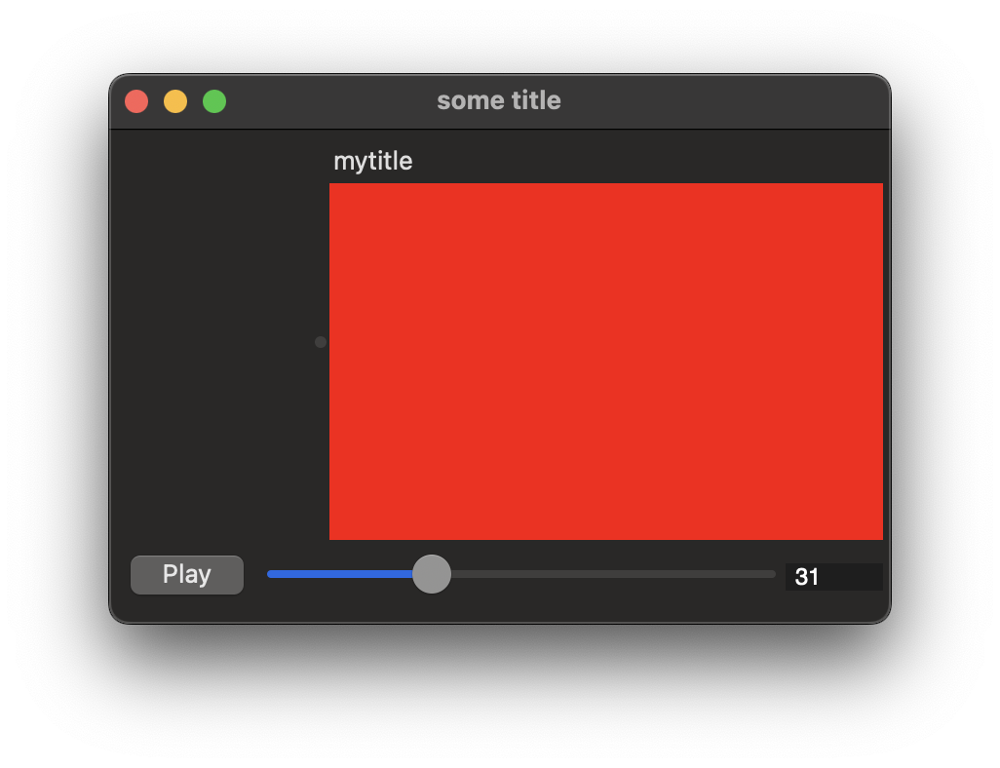

Experiences as a Lisp beginner
I just spent a couple of weeks on-and-off writing some Lisp. I'm probably going to take a break from this for a bit to focus elsewhere; these are some of my thoughts as a relative beginner while they're still fresh in my mind. There are going to be some inaccuracies here, reader beware etc.
What did I get done? I wrote enough wgpu bindings to get a colored pane in a macOS window, and added some LispWorks CAPI widgets:

This ended up being only about 800 lines of code, although I perhaps wrote several times that amount while iterating? About half of this code was raw cffi bindings to wgpu-native. I did not write a lot of data-structure heavy code.
The good parts:
- I really enjoyed being able to live-update code. Hitting 'C-c C-c' in Emacs to compile and replace the current top-level definition felt pretty magical. My closest experience to this prior to writing Lisp has been using JavaScript Hot Module Reloading.
- I started to get the appeal of structural editing. It took me some sustained effort to configure and internalize the smartparens key bindings, but it was definitely worth it. Using structural editing, parenthesis mismatches mostly became a non-problem.
- I started to get the appeal of macros. I was able to write a handful of
with-macros to ensure proper resource management of command buffers, command encoders etc, and have it look completely seamless (vs. passing closures around). Not life-changing, but definitely nice to have. In comparison, writing Rust procedural macros requires a lot more work, so I only reach for them when there's a large benefit. - In terms of learning resources, I found the The Common Lisp Cookbook to be useful, as well as Peter Seibel's Practical Common Lisp. LLMs were also able to answer most of my basic questions.
- QuickLisp worked well for installing the handful of libraries that I used. It doesn't have Cargo's semantic versioning or feature flags, but it did what I needed it to do.
The bad parts:
- There just aren't a lot of blog posts on Lisp. Writing Rust over the past few years, I've been spoiled by the number of "here's an interesting that I found while writing some Rust" blog posts; I find that these are great way of understanding how others solve problems in the language. Perhaps part of the problem is that Lisp came of age before the Internet as we know it?
- Even companies selling Lisp don't seem to produce much in the way of learning material? Seriously, LispWorks CAPI offers a portable GUI toolkit that abstracts over Windows, Cocoa, GTK+ (and Motif). Being able to dynamically update a native GUI while you're working on it is the dream! But all I could find was an 1100 page manual (of which about 200 pages is not API reference material) and a good-but-not-great amount of signup-gated demo code. Searching GitHub, I found very little code actually using CAPI.
- In my very limited amount of searching, I didn't come across any libraries in "active development"; every library was either "done" or abandoned. That said, the done libraries seemed to work well? And I definitely re-calibrated my expectations about what recent activity looked like e.g. I came to see it as a good sign when a library was updated in the past decade.
Closing thoughts:
- I've again discovered that programming is just as much a social activity as a technical activity! On raw technical power, I'd love to use Lisp, but I much prefer having Rust's community. Or, to put it another way: I feel lonely when writing Lisp. (And this is said as someone who doesn't participate in any significant way in the Rust community.)
- Learning Lisp feels like a way to get in touch with a "withered" branch of computing history. (Yes, there are still people writing Lisp today, but as a proportion of programmers they are in the vanishing minority).
- I find it remarkable that Common Lisp as we know it today is largely the same as the Common Lisp of the 1980s, and is exactly the same as the ANSI Common Lisp that was standardized in 1994. There are likely people who are no longer with us who had entire careers writing Lisp, at least some of which would have been ANSI Common Lisp (C is somewhat similar, although the language is regularly revised).
21 July 2025